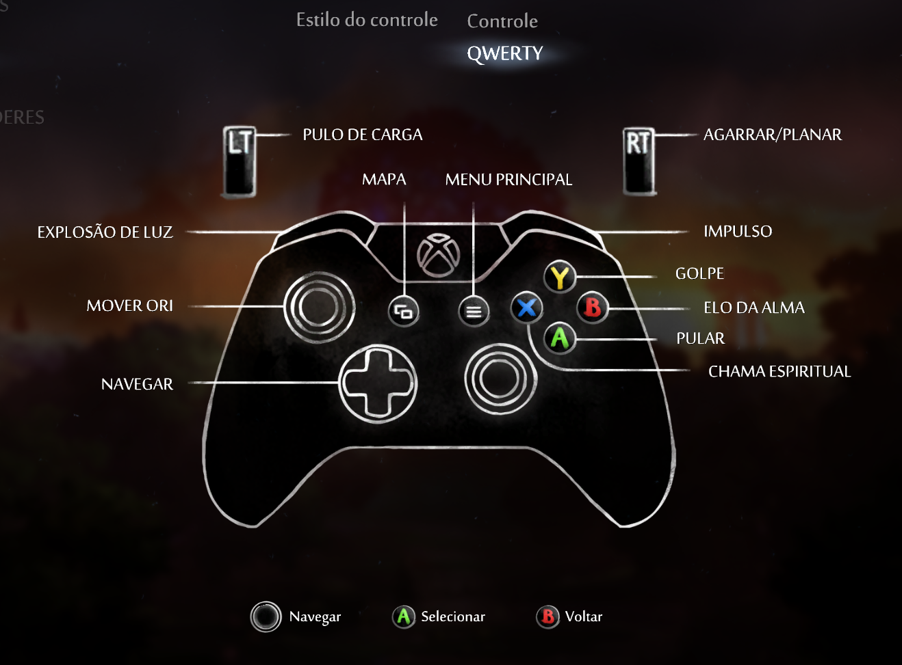
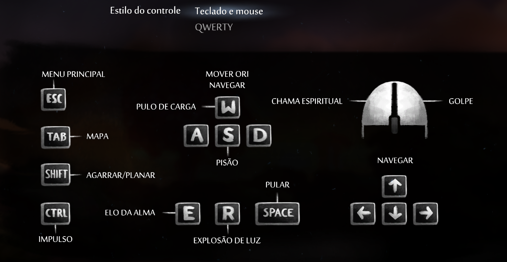
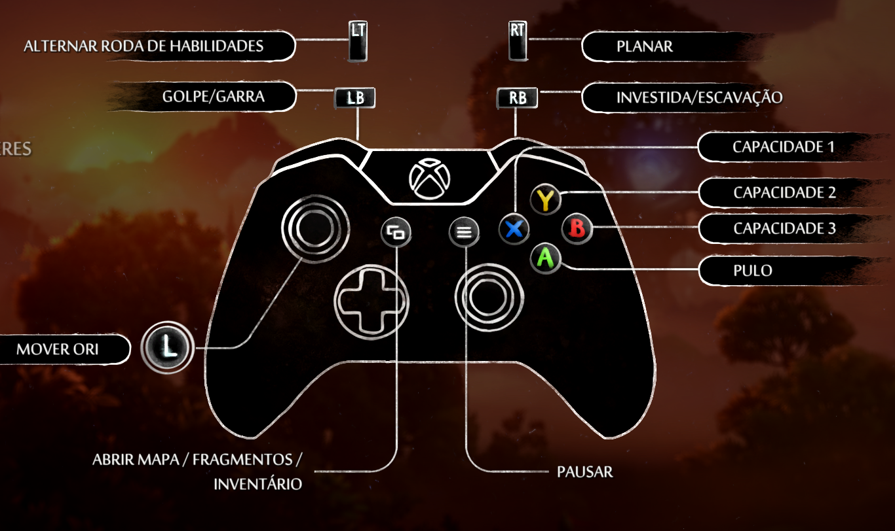
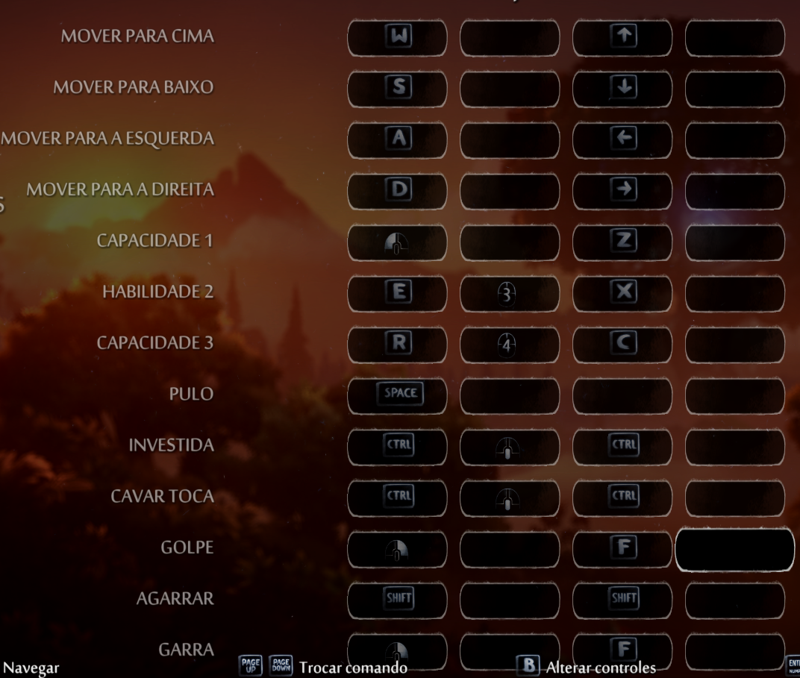
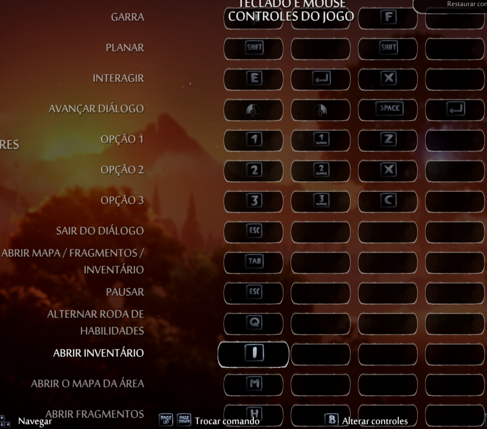

Começando pelo primeiro jogo, é bom destacar que iremos estar tratando da versão mais completa do jogo, que incluirá novos comandos, a definitive edition.
Ori and The Blind Forest é um jogo Single-Player que pode ser jogado pelo Microsoft Windows, Xbox e Nintendo Switch. Sendo encontrado para compra nos aplicativos padrões e para PC é possível encontra-lo na Steam e na aplicação do Xbox para PC. Abaixo está a lista de controles do jogo:
 Ori and The Will of the Wisps é um jogo Single-Player que pode ser jogado pelo Microsoft Windows, Xbox e Nintendo Switch. Sendo encontrado para compra nos aplicativos padrões e para PC é possível encontra-lo na Steam e na aplicação do Xbox para PC. Abaixo Está a lista de todos os comandos do jogo:
  